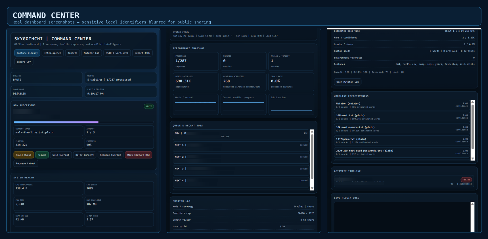
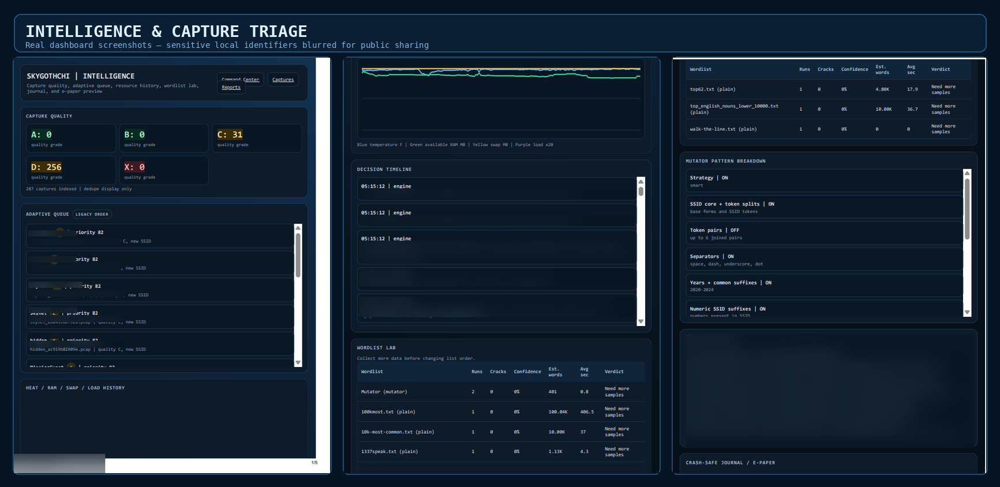
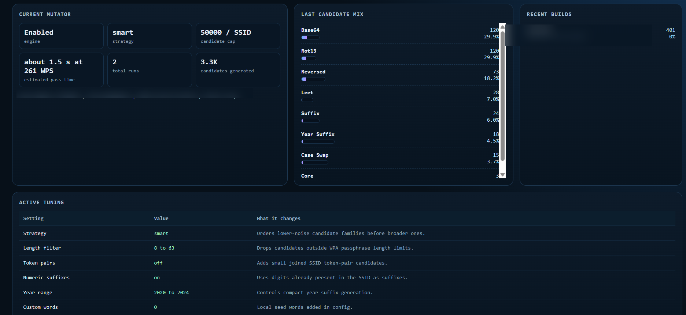

▣
Command Center
See the active job, queue, retry state, activity timeline, current throughput, recent averages, and completed-job performance from one page.
A local dashboard for authorized capture triage, queue control, measured throughput, device health, fan telemetry, and job history—built to replace terminal guesswork with a clear, explainable workflow.

BruteForcer watches a configured capture directory, handles one queued job at a time, keeps a persistent record of what happened, and brings operational visibility into one local web interface.
See the active job, queue, retry state, activity timeline, current throughput, recent averages, and completed-job performance from one page.
Use quality grades, plain-English queue reasons, duplicate grouping, review filters, per-capture history, and separate reports pages.
Surface CPU temperature, RAM, swap, load average, and optional PWM/RPM fan telemetry alongside the active workload.
Expose strategy and workload settings with candidate caps, candidate-family breakdowns, build history, and estimated pass duration.
Keep persistent progress, retries, job history, and an active-job journal so interruptions are easier to understand after a crash or reboot.
Review per-SSID history, wordlist effectiveness, and exportable summaries for authorized testing records and lab documentation.
The images below are from the running project. Network names, capture names, identifiers, keys, and other local details were redacted before publishing.


The local interface runs on the Pwnagotchi and is intended for lab, recovery, and security-assessment environments where you own the networks and captures—or have explicit written authorization to assess them.
Read the source, check the v3.3.0 changelog, use the setup guides, and see the project’s redacted live screenshots on GitHub.